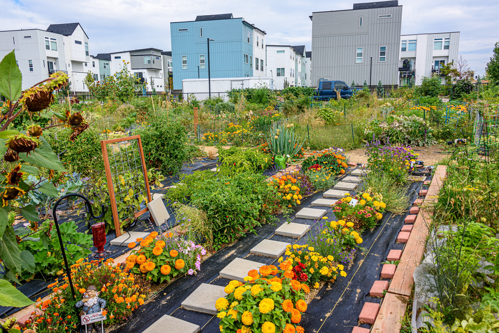
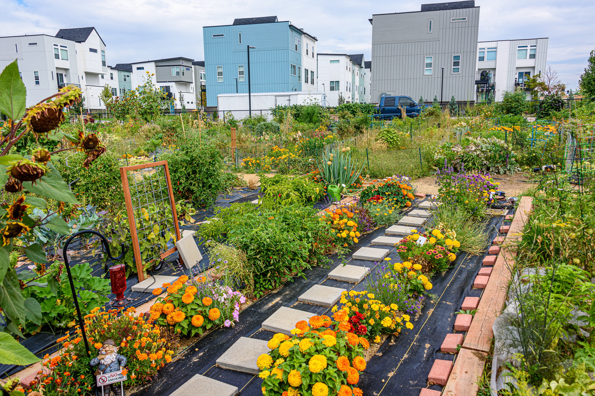

Spades and Forks
These tools cultivate the soil and come in various sizes. Choose one with a long enough handle to suit your height and light enough to manipulate easily.
Subtitle
Gardening is the practice of growing and cultivating plants as part of horticulture. In gardens, ornamental plants are often grown for their flowers, foliage, or overall appearance; useful plants, such as root vegetables, leaf vegetables, fruits, and herbs, are grown for consumption, for use as dyes, or for medicinal or cosmetic use.
Gardening ranges in scale from fruit orchards, to long boulevard plantings with one or more different types of shrubs, trees, and herbaceous plants, to residential back gardens including lawns and foundation plantings, and to container gardens grown inside or outside. Gardening may be very specialized, with only one type of plant grown, or involve a variety of plants in mixed plantings. It involves an active participation in the growing of plants, and tends to be labor-intensive, which differentiates it from farming or forestry.
To tend a garden you need tools, and a fairly small selection will cover most routine tasks. Tools are versatile and can be used for more than one purpose, and you can build a more comprehensive kit over time.
These tools cultivate the soil and come in various sizes. Choose one with a long enough handle to suit your height and light enough to manipulate easily.
These tools cultivate the soil and come in various sizes. Choose one with a long enough handle to suit your height and light enough to manipulate easily.
These tools cultivate the soil and come in various sizes. Choose one with a long enough handle to suit your height and light enough to manipulate easily.
Useful in controlling your plant's growth.
Useful in controlling your plant's growth.
Starting a garden is no easy task. There are a lot factors that need to be considered such as:


 
